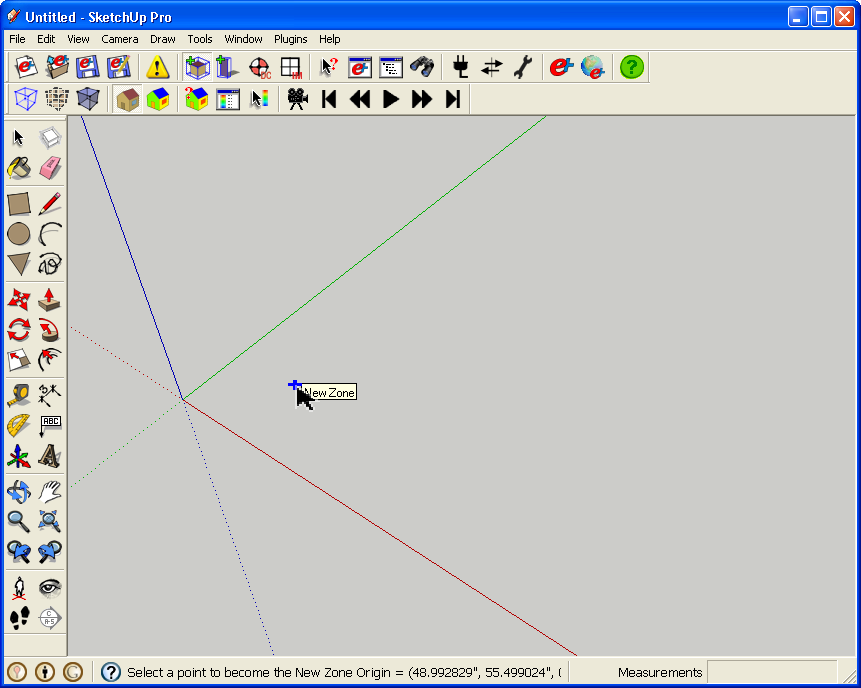
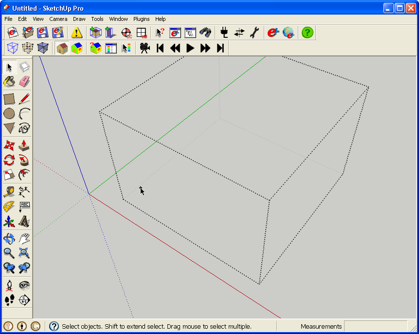
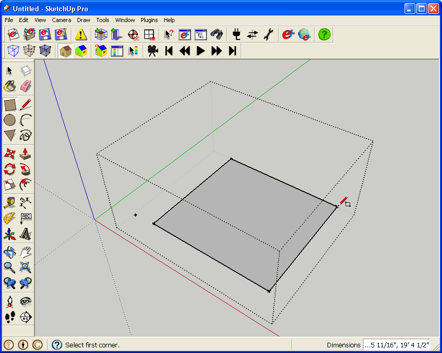
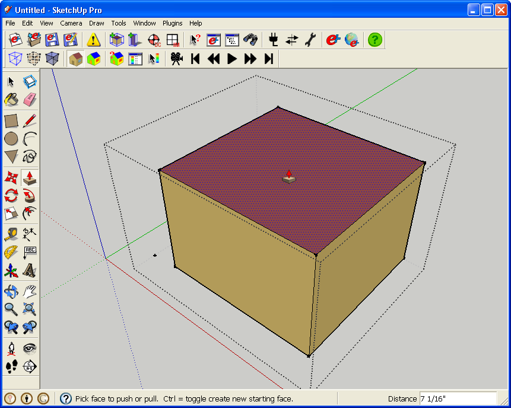
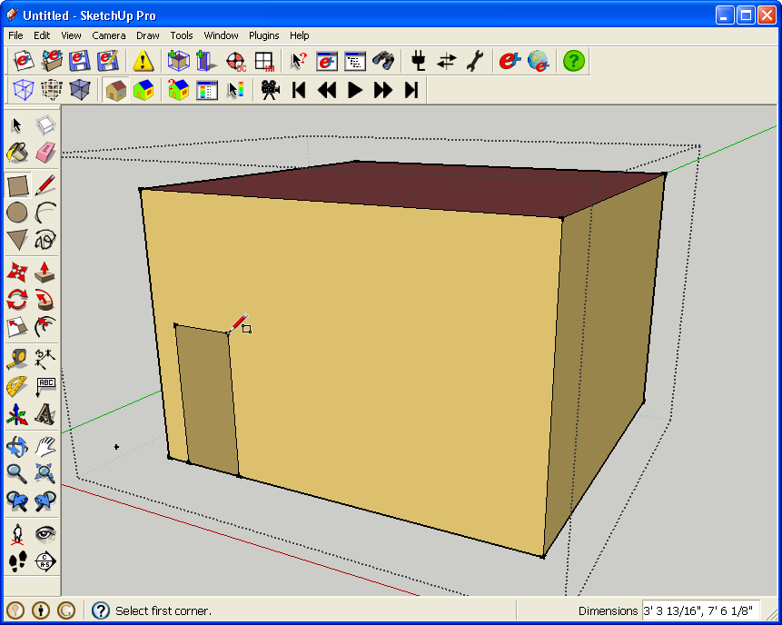
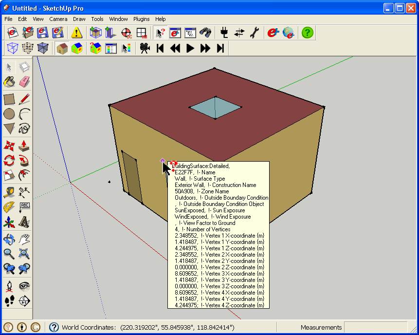
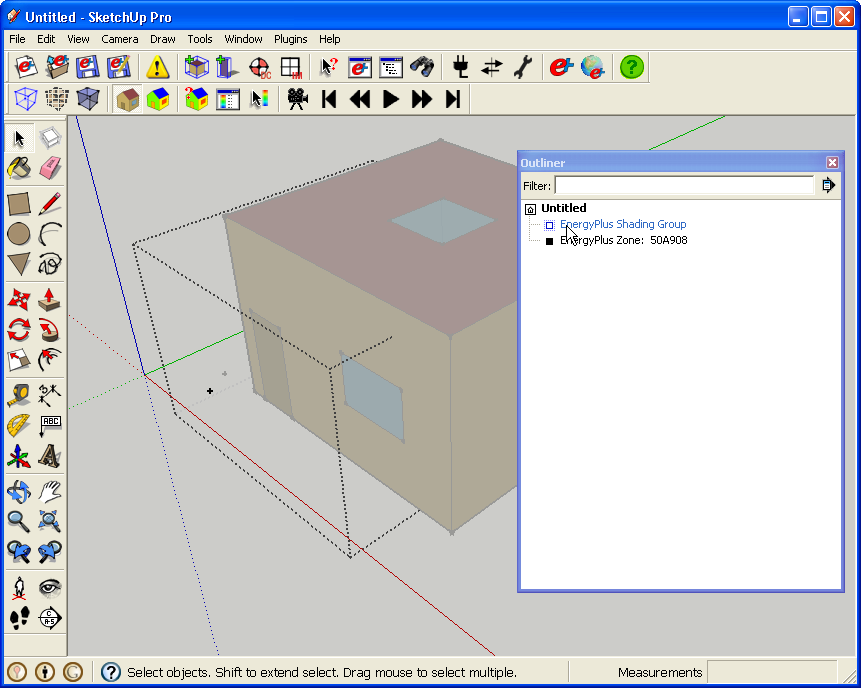
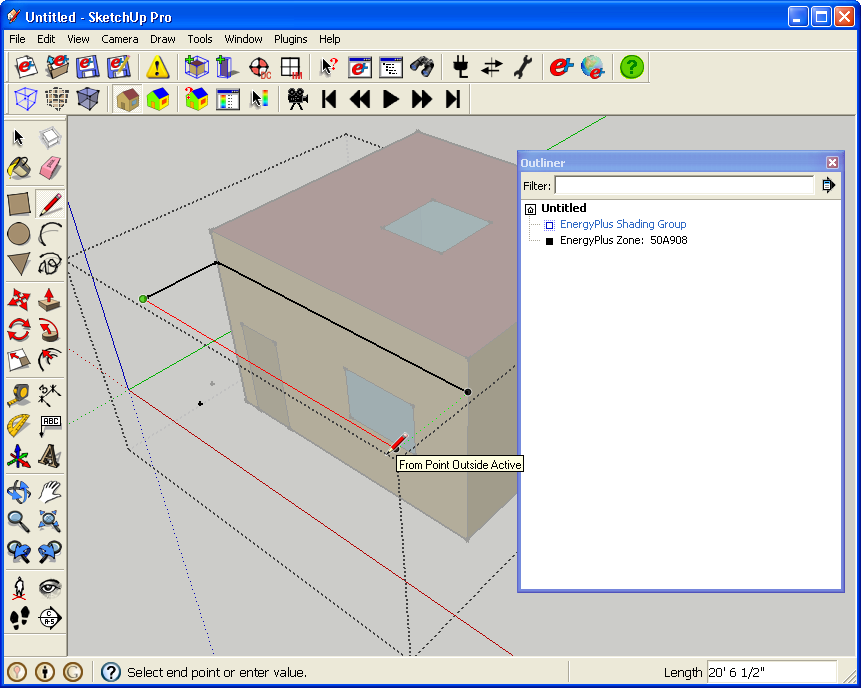
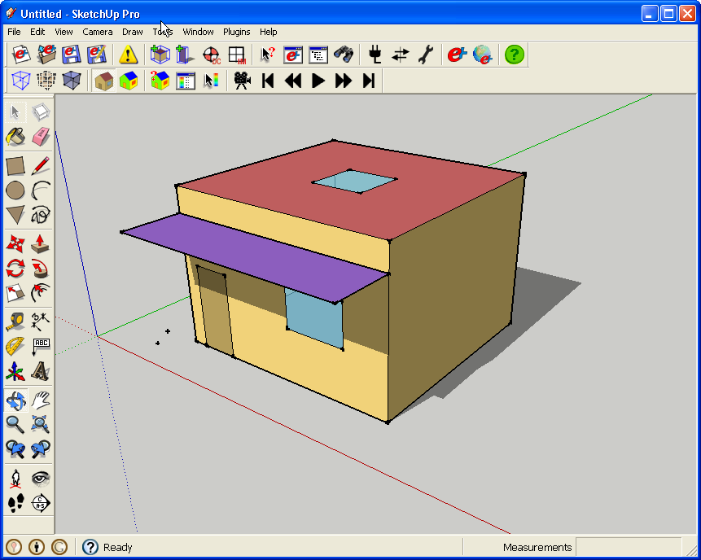

Getting Started
Start from scratch
- When you first open SketchUp with OpenStudio running, or any time you start a new IDF file, OpenStudio loads the NewTemplate.idf file located in the OpenStudio plugin directory. This file comes prepopulated with some basic EnergyPlus objects such as schedules, constructions, and location (the default location is Chicago).
- Sooner or later you are going to need to get familiar with EnergyPlus outside of OpenStudio so take a look around the EnergyPlus directory to familiarize yourself with the utility programs, example models, datasets/libraries, and extensive documentation.
Add a new zone with surfaces
- After starting a new IDF file, create your first zone with the New Zone Tool. After selecting the tool from the OpenStudio Toolbar, click in the model where you want the zone origin to be. The zone origin cannot currently be modified from within the OpenStudio interface.

(Credit: David Goldwasser/NREL)
- After you insert the zone you should see a blue bounding box around your selected zone.

(Credit: David Goldwasser/NREL)
- You can double click on the small tick mark to activate your zone. There may be times that it is tough or impossible to select your zone with this method, for example if it is right on the edge of another zone. There are a few other alternative ways to edit a zone listed below.
- Double click on some geometry in the zone (as mentioned above, if you have something to click)
- Right click on geometry in the zone and choose "Edit Group" (same issues as with method above)
- Double click the zone in the Outliner Window, or single click and then right click "Edit Group"
- With the group selected go to go to the edit menu and choose "Group/Edit Group"
- Once you do have the zone activated, it should appear like it does below. Your blue solid bounding box is now a dashed line.

(Credit: David Goldwasser/NREL)
- Now you can begin drawing surfaces within your zone. Your first surface will typically be a floor. You may draw the floor with the Rectangle Tool or one of the other SketchUp drawing tools, such as the Line Tool. Note that SketchUp uses the right hand rule, based on vertex entry order, to determine the outward normal direction for new surfaces EXCEPT for surfaces drawn on the z = 0 plane. Surfaces drawn on the z = 0 plane are assigned outward normals pointing down, correct for floors, regardless of vertex entry order.

(Credit: David Goldwasser/NREL)
- After the floor is drawn use the Push/Pull Tool to extrude the floor surface. This extrusion will create new surfaces and OpenStudio will infer their type (wall or roof) based on the surface's outward normal. Again you can create geometry with the Line or other tools, but Push/Pull works very well for extruding a floor to create walls and a ceiling. OpenStudio has a color scheme to allow floors, walls, and roofs to be easily identified. Throughout OpenStudio, darker colors are used to identify the outside of a surface, while lighter colors identify the inside. If a surface is oriented the 'wrong way' you may right click on it and select Reverse Face.

(Credit: David Goldwasser/NREL)
Create subsurfaces
- Once you have four walls and a roof, you can start adding subsurfaces to your model. Subsurfaces are, as their name suggests, surfaces that sit within a base surface. This includes doors, windows and skylights. There are a number of guidelines to follow with subsurfaces.
- Do not make a sub-surface as large as it's base surface. If you want a full wall window, inset the window a small amount. This is easily done using the Offset Tool (available in the large SketchUp toolset).
- Do not all a sub-surface to share an edge with another sub-surface or a base surface.
- If you want to erase a sub-surface make sure to erase the edges and not just the face. You can either erase just the edges or double-click on the sub-surface to select the face andd edges. Do not erase edges that are also part of the base surface edge. (e.g. the bottom of a door).

(Credit: David Goldwasser/NREL)
- Subsurfaces also have their own automatic color scheme. Doors are brown, and windows are a translucent blue. If you draw something and it is not the color you expected, that is a sign that something is wrong. Check with the Object Info Window or the Information Tool to see what OpenStudio has interpreted the surface to be.
- You can resize both your surfaces and subsurfaces as you design your building. Just make sure to keep an eye on the coloring and the Object Info Window for any problems that come up.

(Credit: David Goldwasser/NREL)
- Below you can see the Information Tool displaying information about the surface that it is being dragged over. A wall in the first image, and a window in the following image.

(Credit: David Goldwasser/NREL)

(Credit: David Goldwasser/NREL)
Add a Shading Group
- Next you may add a Shading Group at the top-level of the SketchUp model (e.g. not within a zone). Every face drawn in a Shading Group becomes a shading surface.

(Credit: David Goldwasser/NREL)
- You may now active the shading group using the outliner and draw a horizontal shading surface over the door and window.

(Credit: David Goldwasser/NREL)
- Below is a completed zone with shading group.

(Credit: David Goldwasser/NREL)
- You can set a transmittance schedule for shading surfaces. Be default this is left blank and the shading surface always shades. You can pick a specific schedule or set "Always On" or "Always Off". The terms are reversed from what you might first think. "Always On" will set the shading surface to always be transparent. So you would only use this if you wanted to temporarily disable shading surfaces without deleting their geometry. One other use for a schedule on shading surfaces would be to mimic the shading from a deciduous tree over the course of a year.
What's Next?
- More than likely you will want to add more zones, surfaces, subsurfaces, and shading to define the geometry of your building.
- The Default Constructions tutorial will help you control which constructions are applied to new surfaces as they are drawn.
- The Surface Matching tutorial is a good place to go to learn about making necessary connections between surfaces in adjacent zones.
- The Zone Loads tutorial will show you how to add basic internal gains (such as lighting and equipment) to your zones.
- Finally the Run EnergyPlus tutorial and the View Simulation Results tutorial will show you how to run EnergyPlus and view the results.
|